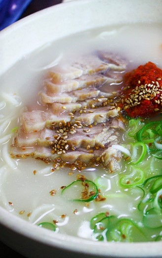

1인분 / kcal
성인기준 하루 권장 칼로리 2000~2500kcal
비타민E / ㎍RE
혈관의 탄력 유지
지방질의 산화를 억제하는 강력한 항 노화물질
비타민B1 / ㎍RE
면역체계 강화
신진대사작용을 촉진, 도움
철분 / mg
헤모글로빈의 구성 성분
철분이 부족하면 빈혈 위험
고기국수는 제주도의 전통 음식 중 하나다.
돼지고기와 뼈를 푹 삶아 소금으로만 간한 육수에, 면을 삶고 고명으로 돼지고기 수육을 올리는 요리이다.
제주도는 밀을 주식으로 사용했기 때문에, 육지와 달리
굵은 면이 특징.
특히, 제주도특산품인 돼지고기가 다른지역에 비해 역한냄새가 적고,
지방의 고소함이 뛰어나 깊은 맛이 우러난다.